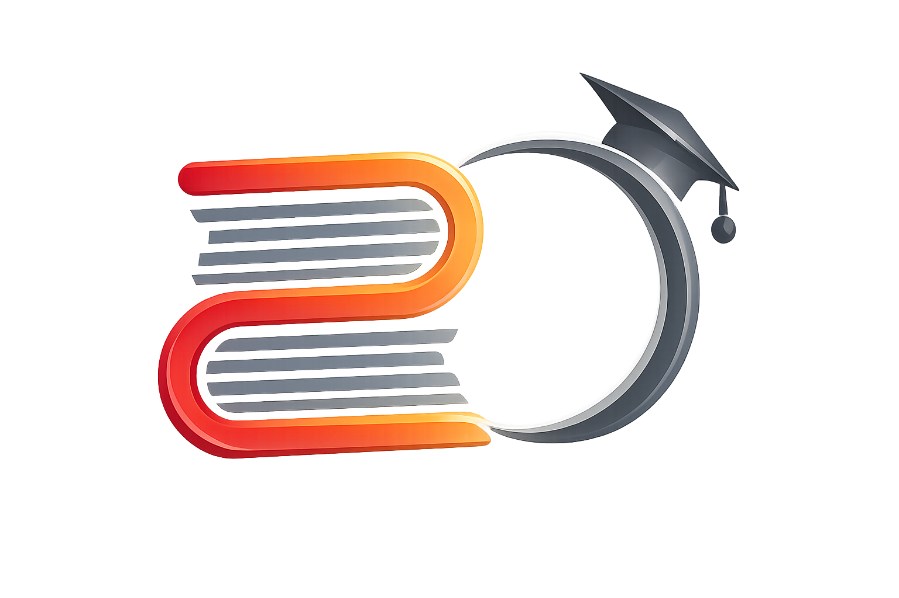
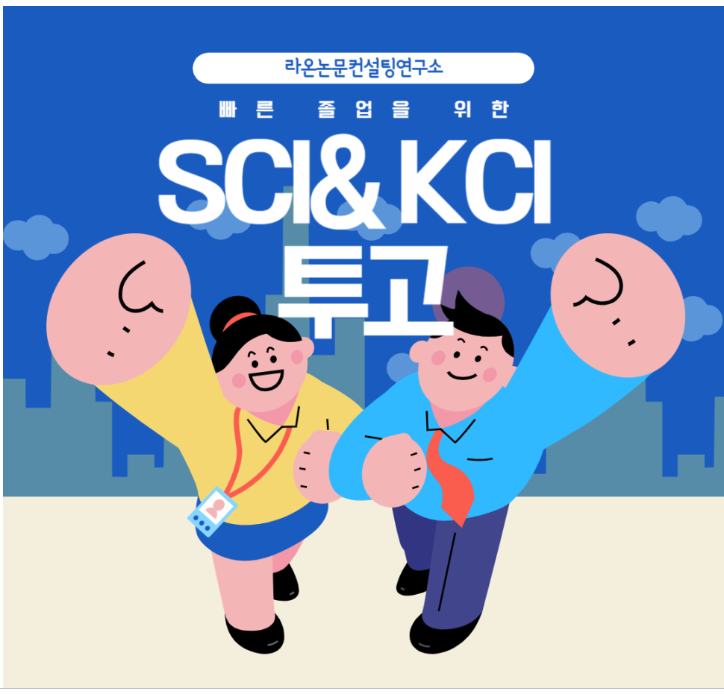
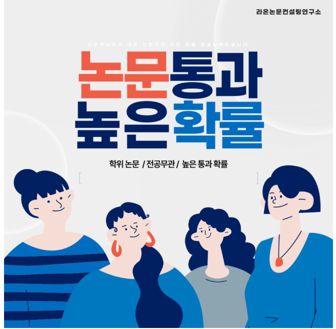

목차가 계속 바뀜
뼈대가 흔들리면 자료 수집과 작성이 동시에 무너집니다.

논문 아카데미
용인시 아이파크 · 석·박사 논문 및 통계 컨설팅
석·박사 학위논문, KCI/SCI 투고, SPSS 분석까지.
지금 단계에서 필요한 것만 잡아 “다음 행동”이 바로 보이게 만듭니다.
무료 · 30초 내 신청
상담 목적 외 사용 없음
지금 단계가 명확해짐
주제/설계/작성/분석/투고 중 어디서 멈췄는지 정리
수정 루프가 줄어듦
피드백을 체크리스트로 바꿔 반복 수정 최소화
통계가 ‘글’이 됨
결과 해석→논의→결론이 자연스럽게 이어지게 구성
지금 떠나면, 막힌 지점을 다시 혼자 탐색하느라 시간과 수정 비용이 더 커질 수 있습니다.
막힌 원인을 쪼개면 해결이 쉬워집니다. 흔한 지점부터 빠르게 정리합니다.
뼈대가 흔들리면 자료 수집과 작성이 동시에 무너집니다.
“무슨 분석이 필요한지”가 먼저 정리되어야 결과가 씁니다.
수정이 ‘할 일’로 바뀌지 않으면 계속 불어나기만 합니다.
늦을수록 선택지가 줄어듭니다. 지금 정리할수록 유리합니다.
지금 단계에서 필요한 기준과 순서를 잡아, 작성이 다시 앞으로 가게 만듭니다.
목차와 논리 흐름을 먼저 고정해, 중간에 멈추지 않도록 만듭니다.
연구의 기여도가 분명해지도록 구조와 논리를 촘촘하게 다듬습니다.
심사 기준에 맞춰 완성도를 올리고, 수정 대응을 체계화합니다.
투고 전략부터 심사 대응까지, 단계별 체크포인트로 관리합니다.
데이터에 맞는 분석 선택부터 해석·표 작성 방향까지 한 번에 정리합니다.
말보다 결과가 빠릅니다. 구조, 근거, 가독성 중심으로 정리합니다.






작업 원칙 01
지금 단계에 필요한 것만
할 일을 줄이고, 중요한 것부터 해결하도록 정리합니다.
작업 원칙 02
수정은 체크리스트로
피드백을 ‘할 일’로 바꾸면 속도와 자신감이 함께 올라갑니다.
작업 원칙 03
근거와 표현의 일관성
읽히는 논문은 결국 ‘정돈된 설득’으로 완성됩니다.
긴 설명보다 “다음에 뭘 하면 되는지”가 선명해지는 방식으로 진행합니다.
STEP 01
현재 단계(주제/설계/작성/분석/투고)와 막힘의 원인을 짧게 정리합니다.
STEP 02
해야 할 일을 우선순위로 정렬하고, 실행 가능한 체크리스트로 바꿉니다.
STEP 03
수정-보완-완성까지 흐름이 끊기지 않도록 핵심 기준과 피드백을 제공합니다.
망설이는 이유를 먼저 정리해드립니다.
가능합니다. 오히려 이 단계에서 방향과 범위를 잘못 잡으면 이후 수정 비용이 커질 수 있습니다. 전공/관심사/자료 가능성을 기준으로 주제 후보를 현실적으로 좁히는 방식으로 진행합니다.
가능합니다. 데이터 구조와 연구문제에 맞춰 필요한 분석을 선택하고, 결과 해석과 작성 방향까지 연결해 정리합니다.
네. 상황에 따라 비대면 진행도 가능합니다. 상담에서 현재 단계와 목표를 확인한 뒤, 진행 방식(자료 공유/피드백 형태)을 맞춰 안내드립니다.
“대충 빨리 끝내기”만 원하는 경우에는 기대와 다를 수 있습니다. 논문은 심사자가 납득하는 구조가 핵심이므로, 기준과 근거를 갖춘 완성도 향상에 집중합니다.
지금 막힌 지점을 짧게 정리하면, 불필요한 수정 시간을 줄이고 다음 단계가 선명해집니다.
입력은 2개만 받습니다
무료 · 30초 내 신청 · 상담 목적 외 사용하지 않습니다.
안내: 무료 상담은 “진단” 중심입니다. 이후 진행은 목표와 자료 상태에 따라 달라질 수 있습니다.